01 · Khởi động · chưa có giờ

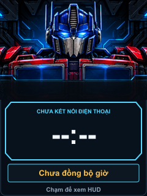
Không hiển thị ngày/giờ giả sau mất nguồn.
Bản review bố cục ngày 07/11/2026 · Chưa triển khai firmware. Ảnh có dữ liệu minh họa; biểu tượng hướng rẽ/cảnh báo là ký hiệu bố cục, sẽ dùng asset HUD khi triển khai. Optimus/Bumblebee dùng lại ảnh nền đã duyệt; bố cục dọc sẽ cần asset riêng sau khi chốt.
Quy tắc: giờ hiện tại chỉ ở header; “ĐẾN NƠI” là ETA. Tốc độ xe lớn, biển giới hạn riêng. Làn/cảnh báo không đẩy nhau biến mất. Vuốt lên tăng, vuốt xuống giảm 0–100%; 0% tắt tiếng. Chạm đổi Đồng hồ ↔ HUD. Thống kê/thiết bị là màn phụ.

Không hiển thị ngày/giờ giả sau mất nguồn.
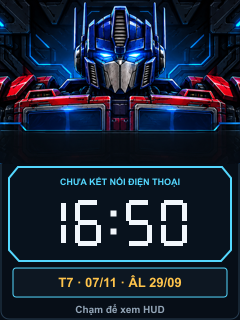
Nền cơ khí, giờ segment, lịch âm; random mỗi lần cấp nguồn.
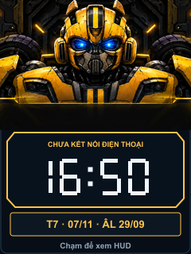
Cùng bố cục; đổi màu viền theo nhân vật.
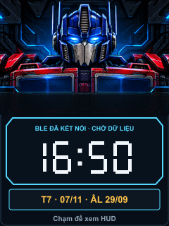
Tách trạng thái BLE khỏi trạng thái dữ liệu Waze.
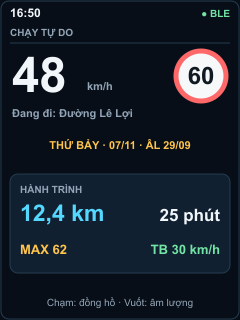
Tốc độ xe là thông tin lớn nhất; ngày giờ chỉ xuất hiện một lần.
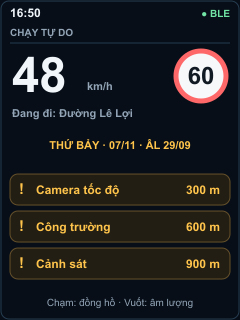
Các cảnh báo còn lại gộp số lượng; không thu nhỏ chữ để nhét tất cả.
Hướng rẽ + khoảng cách lớn, tốc độ/giới hạn ở trên, ETA cố định.
Làn được chọn sáng cyan; các làn khác xám.
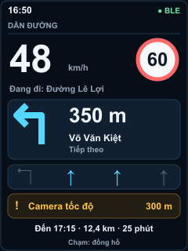
Giữ cả làn, cảnh báo và ETA; không để làn đẩy cảnh báo biến mất.
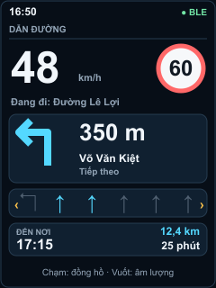
Ví dụ 8 làn: hiện 6 quanh làn được chọn, đánh dấu làn ngoài khung.
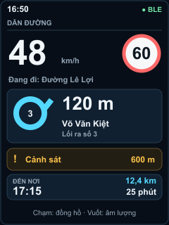
Các biến thể vòng xuyến dùng chung bố cục.
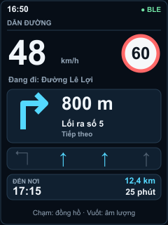
Tương tự cho giữ trái, chếch, rẽ gắt và quay đầu.
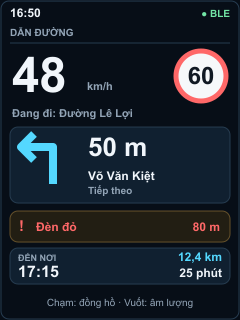
Khoảng cách sắp rẽ và cảnh báo gần được nhấn mạnh.
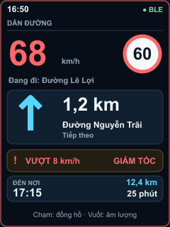
Viền đỏ/số tốc độ báo nguy; mute không tắt cảnh báo thị giác.
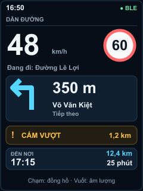
Giữ thông tin cấm vượt khi có lộ trình.
Mức độ kẹt xe và số phút trễ là hai trường riêng.
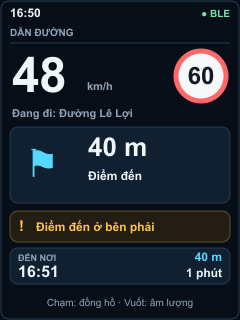
Sắp tới đích; đến nơi dùng cùng vùng biểu tượng, khoảng cách về 0 khi dữ liệu xác nhận.
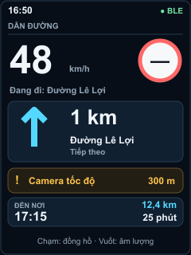
Không diễn giải giới hạn chưa biết thành 0 hoặc đường vô hạn.
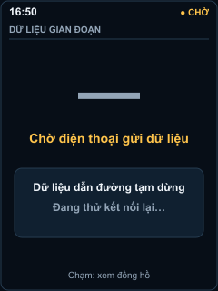
Đề xuất trạng thái rõ ràng khi hết hạn dữ liệu; không giả vờ tốc độ vẫn hợp lệ.
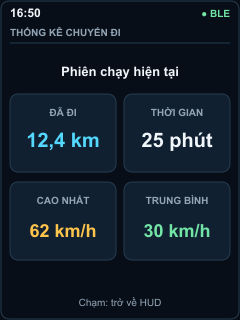
Không tự che ETA mỗi 5 phút; đường vào màn phụ cần bạn duyệt.
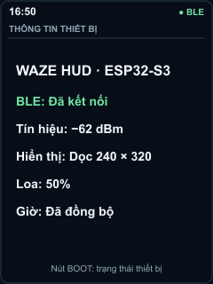
Không vẽ pin/GPS giả: board hiện chưa đọc pin, giao thức chưa có chất lượng GPS.
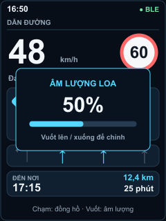
Overlay ngắn khoảng 1,5 giây; vuốt đã nhận diện không phát sinh thao tác chạm.
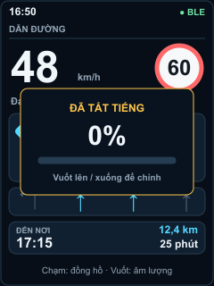
0% ngừng tiếng, vẫn hiện cảnh báo; lưu mức sau khi kết thúc thao tác.
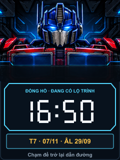
Chạm quay lại HUD; đề xuất tự bật HUD khi gần rẽ/cảnh báo quan trọng.

Đề xuất giảm đèn nền, giữ màu cảnh báo; ảnh chỉ minh họa bố cục, không mô phỏng độ sáng vật lý.
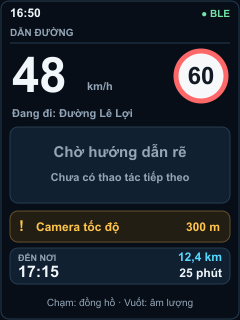
Ngày giờ chỉ ở header; không thay ô rẽ bằng thêm một đồng hồ hoặc đoán đi thẳng.
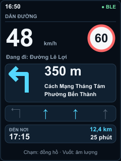
Ưu tiên hai dòng tĩnh trước khi cuộn; đầy đủ UTF-8 tiếng Việt.
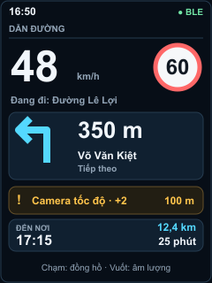
Hiện cảnh báo ưu tiên, số lượng còn lại; mức ưu tiên cần chốt trước triển khai.